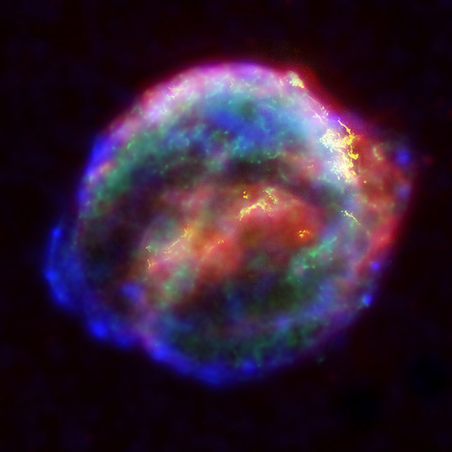

¿Qué son las estrellas?
Las estrellas son cuerpos celestes que emiten luz y calor debido a las reacciones nucleares que ocurren en su interior. Son el elemento fundamental en la formación de galaxias y sistemas planetarios, y se estima que existen alrededor de 100 mil millones de estrellas en nuestra galaxia, la Vía Láctea.
Tipos de estrellas
Existen diferentes tipos de estrellas, clasificadas según su tamaño, temperatura y luminosidad. Algunos ejemplos son:
- Estrellas enanas rojas: son las estrellas más comunes en el universo y tienen una temperatura y luminosidad baja.
- Estrellas gigantes: son estrellas que han agotado su combustible y se han expandido en tamaño, emitiendo mucha más luz y calor que una estrella común.
- Estrellas supernovas: son estrellas que han llegado al final de su vida y explotan en una explosión extremadamente poderosa. 
La estrella más cercana a la Tierra
La estrella más cercana a la Tierra es Proxima Centauri, una estrella enana roja que se encuentra a unos 4,24 años luz de distancia. Es parte de un sistema estelar triple llamado Alpha Centauri, que también incluye a las estrellas Alpha Centauri A y Alpha Centauri B.